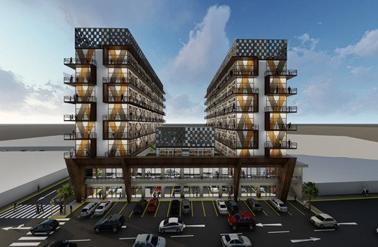
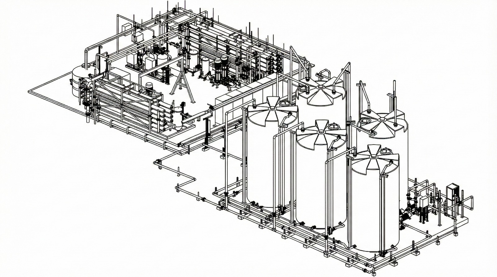
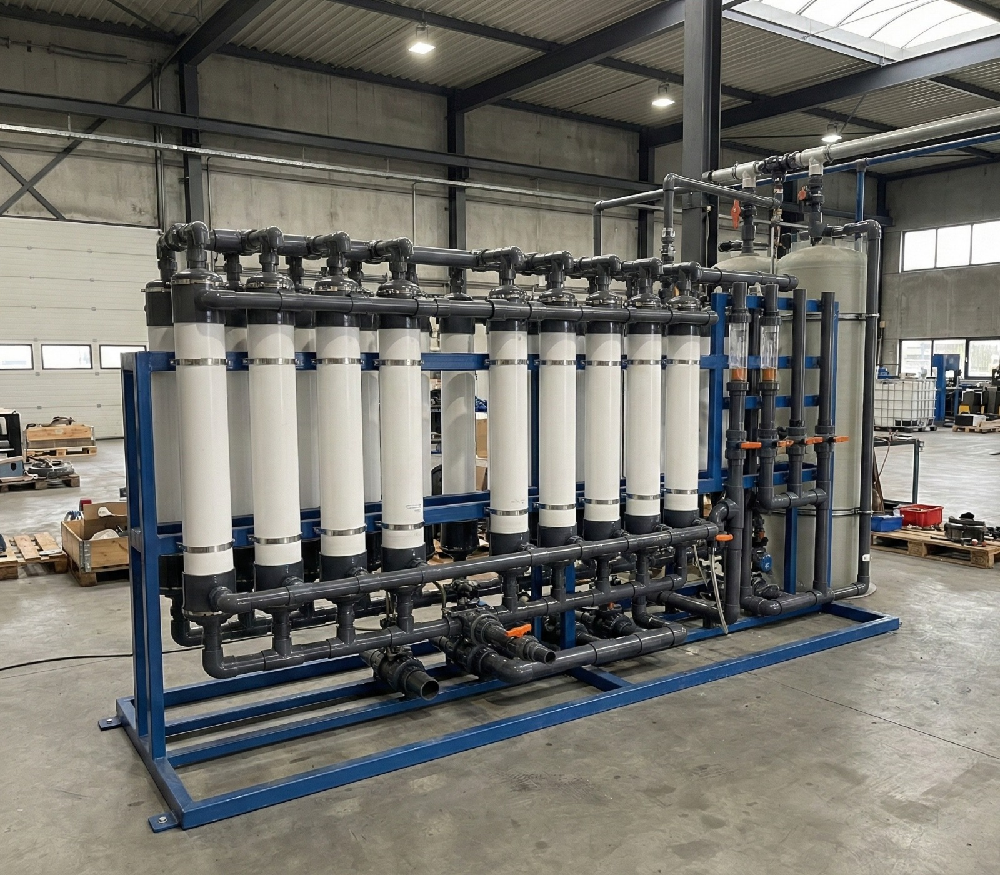
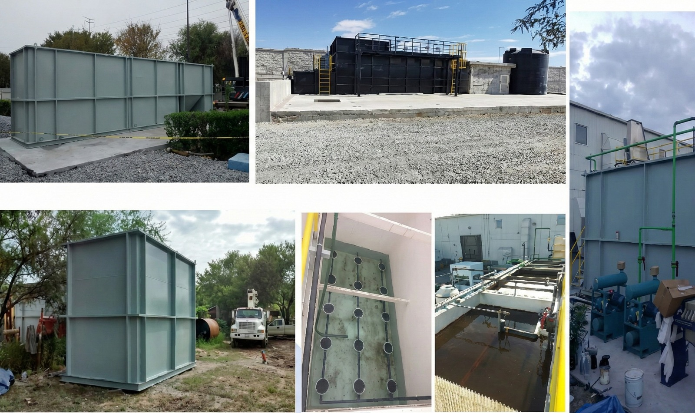

Diseño, suministro y mantenimiento de sistemas de tratamiento. Ingeniería, arquitectura y construcción para cada proyecto.
Solicitar cotización Explorar solucionesTAAC: Ingeniería, Arquitectura y Soluciones Inteligentes en Agua. Nos especializamos en materializar proyectos complejos a través de un diseño funcional y de alto nivel. Nuestra propuesta integra la máxima precisión técnica con una visión sostenible, asegurando rentabilidad, durabilidad y resultados concretos en cada obra.

Tratamiento, automatización, mantenimientos y diseño de plantas potabilizadoras e industriales. Especialistas en suministro de membranas MBR (Biorreactores de Membrana) y módulos de ultrafiltración para tratamiento de aguas residuales en México. Consulta nuestras plantas PTAR-MBR y solicita una cotización.

Diseño arquitectónico, planos ejecutivos y visualización de proyectos.

Obra civil, supervisión técnica y soluciones estructurales.




¿Tienes un proyecto en mente o necesitas asesoría? Escríbenos y con gusto te atenderemos.